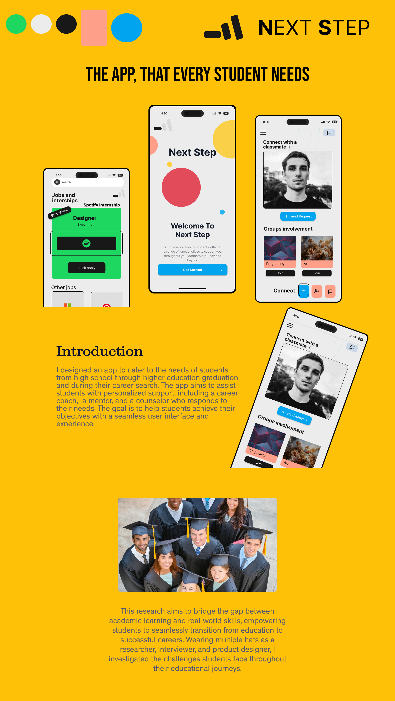

Archived concept · visual record restored
Next Step — support from school to first job.
Students often navigate classes, mentors, peer groups, internships, and career advice across disconnected systems. Next Step brings those needs into one mobile experience built around timely, personal support.
